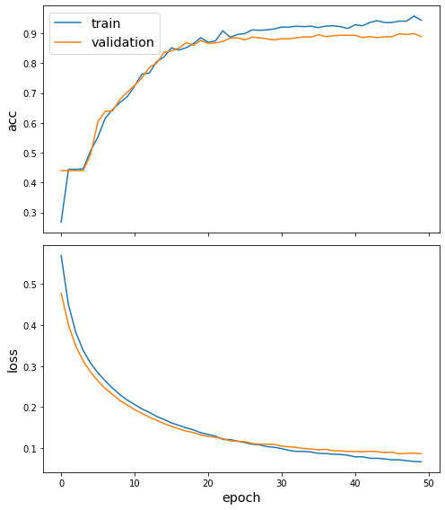
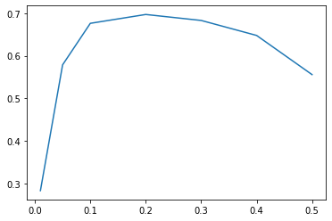

import nltk [GML] Chap7: Graph Neural Network Topic Classifier
Graph Neural Network Topic Classifier
In the following we will focus on building a model for topic classification based on a Graph Neural Network approach.
In particular in the following we will show you how to:
- Create a TF-IDF representation of the corpus, that will be used as node features in the Graph Neural Network model
- Build, train a Graph Neural Network model and identify the best threshold for classifying documents
- Test the performance of the model in a out-of-sample tests, following a truly inductive approach
NOTE: This Notebook can only be run after the 01_nlp_graph_creation notebook, as some of the results computed in the first notebook will be here reused.
Load Dataset
import numpy as np
import pandas as pd
import networkx as nxcorpus = pd.read_pickle("corpus.p")corpus.head()| label | clean_text | parsed | language | |
|---|---|---|---|---|
| id | ||||
| test/14826 | [trade] | ASIAN EXPORTERS FEAR DAMAGE FROM U.S.-JAPAN RI... | (ASIAN, EXPORTERS, FEAR, DAMAGE, FROM, U.S.-JA... | en |
| test/14828 | [grain] | CHINA DAILY SAYS VERMIN EAT 7-12 PCT GRAIN STO... | (CHINA, DAILY, SAYS, VERMIN, EAT, 7, -, 12, PC... | en |
| test/14829 | [crude, nat-gas] | JAPAN TO REVISE LONG-TERM ENERGY DEMAND DOWNWA... | (JAPAN, TO, REVISE, LONG, -, TERM, ENERGY, DEM... | en |
| test/14832 | [corn, grain, rice, rubber, sugar, tin, trade] | THAI TRADE DEFICIT WIDENS IN FIRST QUARTER Th... | (THAI, TRADE, DEFICIT, WIDENS, IN, FIRST, QUAR... | en |
| test/14833 | [palm-oil, veg-oil] | INDONESIA SEES CPO PRICE RISING SHARPLY Indon... | (INDONESIA, SEES, CPO, PRICE, RISING, SHARPLY,... | en |
from collections import Counter
topics = Counter([label for document_labels in corpus["label"] for label in document_labels]).most_common(10)topics[('earn', 3964),
('acq', 2369),
('money-fx', 717),
('grain', 582),
('crude', 578),
('trade', 485),
('interest', 478),
('ship', 286),
('wheat', 283),
('corn', 237)]topicsList = [topic[0] for topic in topics]
topicsSet = set(topicsList)
dataset = corpus[corpus["label"].apply(lambda x: len(topicsSet.intersection(x))>0)]def get_labels(corpus, topicsList=topicsList):
return corpus["label"].apply(
lambda labels: pd.Series({label: 1 for label in labels}).reindex(topicsList).fillna(0)
)[topicsList]labels = get_labels(dataset)labels.head()| earn | acq | money-fx | grain | crude | trade | interest | ship | wheat | corn | |
|---|---|---|---|---|---|---|---|---|---|---|
| id | ||||||||||
| test/14826 | 0.0 | 0.0 | 0.0 | 0.0 | 0.0 | 1.0 | 0.0 | 0.0 | 0.0 | 0.0 |
| test/14828 | 0.0 | 0.0 | 0.0 | 1.0 | 0.0 | 0.0 | 0.0 | 0.0 | 0.0 | 0.0 |
| test/14829 | 0.0 | 0.0 | 0.0 | 0.0 | 1.0 | 0.0 | 0.0 | 0.0 | 0.0 | 0.0 |
| test/14832 | 0.0 | 0.0 | 0.0 | 1.0 | 0.0 | 1.0 | 0.0 | 0.0 | 0.0 | 1.0 |
| test/14839 | 0.0 | 0.0 | 0.0 | 0.0 | 0.0 | 0.0 | 0.0 | 1.0 | 0.0 | 0.0 |
def get_features(corpus):
return corpus["parsed"]def get_features_and_labels(corpus):
return get_features(corpus), get_labels(corpus)def train_test_split(corpus):
train_idx = [idx for idx in corpus.index if "training/" in idx]
test_idx = [idx for idx in corpus.index if "test/" in idx]
return corpus.loc[train_idx], corpus.loc[test_idx]train, test = train_test_split(dataset)def my_spacy_tokenizer(pos_filter=["NOUN", "VERB", "PROPN"]):
def tokenizer(doc):
return [token.lemma_ for token in doc if (pos_filter is None) or (token.pos_ in pos_filter)]
return tokenizerfrom sklearn.feature_extraction.text import TfidfVectorizercntVectorizer = TfidfVectorizer(
analyzer=my_spacy_tokenizer(),
max_df = 0.25, min_df = 2, max_features = 10000
)trainFeatures, _ = get_features_and_labels(train)
testFeatures, _ = get_features_and_labels(test)trainedTransformed = cntVectorizer.fit_transform(trainFeatures)
testTransformed = cntVectorizer.transform(testFeatures)features = pd.concat([
pd.DataFrame.sparse.from_spmatrix(trainedTransformed, index=trainFeatures.index),
pd.DataFrame.sparse.from_spmatrix(testTransformed, index=testFeatures.index)
])features.shape(9034, 10000)Creating the Graph
import stellargraph as sg
from stellargraph import StellarGraph, IndexedArray
from stellargraph.mapper import GraphSAGENodeGenerator
from stellargraph.layer import GraphSAGE
from tensorflow.keras import layers, optimizers, losses, metrics, Modeledges = pd.read_pickle("bipartiteEdges.p")entityTypes = {entity: ith for ith, entity in enumerate(edges["type"].unique())}entityTypes{'keywords': 0, 'GPE': 1, 'ORG': 2, 'PERSON': 3}documentFeatures = features.loc[set(corpus.index).intersection(features.index)] #.assign(document=1, entity=0)documentFeatures.head()| 0 | 1 | 2 | 3 | 4 | 5 | 6 | 7 | 8 | 9 | ... | 9990 | 9991 | 9992 | 9993 | 9994 | 9995 | 9996 | 9997 | 9998 | 9999 | |
|---|---|---|---|---|---|---|---|---|---|---|---|---|---|---|---|---|---|---|---|---|---|
| id | |||||||||||||||||||||
| training/9238 | 0.0 | 0.0 | 0.0 | 0.0 | 0.0 | 0.0 | 0.0 | 0.0 | 0.0 | 0.0 | ... | 0.0 | 0.0 | 0.0 | 0.0 | 0.0 | 0.0 | 0.0 | 0.0 | 0.0 | 0.0 |
| test/15296 | 0.0 | 0.0 | 0.0 | 0.0 | 0.0 | 0.0 | 0.0 | 0.0 | 0.0 | 0.0 | ... | 0.0 | 0.0 | 0.0 | 0.0 | 0.0 | 0.0 | 0.0 | 0.0 | 0.0 | 0.0 |
| test/15287 | 0.0 | 0.0 | 0.0 | 0.0 | 0.0 | 0.0 | 0.0 | 0.0 | 0.0 | 0.0 | ... | 0.0 | 0.0 | 0.0 | 0.0 | 0.0 | 0.0 | 0.0 | 0.0 | 0.0 | 0.0 |
| training/5938 | 0.0 | 0.0 | 0.0 | 0.0 | 0.0 | 0.0 | 0.0 | 0.0 | 0.0 | 0.0 | ... | 0.0 | 0.0 | 0.0 | 0.0 | 0.0 | 0.0 | 0.0 | 0.0 | 0.0 | 0.0 |
| test/21465 | 0.0 | 0.0 | 0.0 | 0.0 | 0.0 | 0.0 | 0.0 | 0.0 | 0.0 | 0.0 | ... | 0.0 | 0.0 | 0.0 | 0.0 | 0.0 | 0.0 | 0.0 | 0.0 | 0.0 | 0.0 |
5 rows × 10000 columns
entities = edges.groupby(["target", "type"])["source"].count().groupby(level=0).apply(
lambda s: s.droplevel(0).reindex(entityTypes.keys()).fillna(0)
).unstack(level=1)entityFeatures = (entities.T / entities.sum(axis=1)).T.assign(document=0, entity=1)nodes = {"entity": entityFeatures,
"document": documentFeatures}stellarGraph = StellarGraph(nodes,
edges[edges["source"].isin(documentFeatures.index)],
edge_type_column="type")print(stellarGraph.info())StellarGraph: Undirected multigraph
Nodes: 23998, Edges: 86849
Node types:
entity: [14964]
Features: float32 vector, length 6
Edge types: entity-GPE->document, entity-ORG->document, entity-PERSON->document, entity-keywords->document
document: [9034]
Features: float32 vector, length 10000
Edge types: document-GPE->entity, document-ORG->entity, document-PERSON->entity, document-keywords->entity
Edge types:
document-keywords->entity: [78838]
Weights: range=[0.0827011, 1], mean=0.258464, std=0.0898612
Features: none
document-ORG->entity: [4129]
Weights: range=[2, 22], mean=3.24122, std=2.30508
Features: none
document-GPE->entity: [2943]
Weights: range=[2, 25], mean=3.25926, std=2.07008
Features: none
document-PERSON->entity: [939]
Weights: range=[2, 14], mean=2.97444, std=1.65956
Features: nonefrom stellargraph.data import EdgeSplittersplitter = EdgeSplitter(stellarGraph)graphTest, samplesTest, labelsTest = splitter.train_test_split(p=0.2)** Sampled 17369 positive and 17369 negative edges. **print(stellarGraph.info())StellarGraph: Undirected multigraph
Nodes: 23998, Edges: 86849
Node types:
entity: [14964]
Features: float32 vector, length 6
Edge types: entity-GPE->document, entity-ORG->document, entity-PERSON->document, entity-keywords->document
document: [9034]
Features: float32 vector, length 10000
Edge types: document-GPE->entity, document-ORG->entity, document-PERSON->entity, document-keywords->entity
Edge types:
document-keywords->entity: [78838]
Weights: range=[0.0827011, 1], mean=0.258464, std=0.0898612
Features: none
document-ORG->entity: [4129]
Weights: range=[2, 22], mean=3.24122, std=2.30508
Features: none
document-GPE->entity: [2943]
Weights: range=[2, 25], mean=3.25926, std=2.07008
Features: none
document-PERSON->entity: [939]
Weights: range=[2, 14], mean=2.97444, std=1.65956
Features: noneprint(graphTest.info())StellarGraph: Undirected multigraph
Nodes: 23998, Edges: 69480
Node types:
entity: [14964]
Features: float32 vector, length 6
Edge types: entity-GPE->document, entity-ORG->document, entity-PERSON->document, entity-keywords->document
document: [9034]
Features: float32 vector, length 10000
Edge types: document-GPE->entity, document-ORG->entity, document-PERSON->entity, document-keywords->entity
Edge types:
document-keywords->entity: [63057]
Weights: range=[0.0827011, 1], mean=0.258427, std=0.0899773
Features: none
document-ORG->entity: [3296]
Weights: range=[2, 22], mean=3.21572, std=2.2592
Features: none
document-GPE->entity: [2360]
Weights: range=[2, 19], mean=3.24237, std=2.01535
Features: none
document-PERSON->entity: [767]
Weights: range=[2, 14], mean=3, std=1.69163
Features: noneCreating a Topic Classification Model
We start by splitting the data into train, validation and test
targets = labels.reindex(documentFeatures.index).fillna(0)
#documentFeatures.drop(["entity", "document"], axis=1)targets.head()| earn | acq | money-fx | grain | crude | trade | interest | ship | wheat | corn | |
|---|---|---|---|---|---|---|---|---|---|---|
| id | ||||||||||
| test/16678 | 1.0 | 0.0 | 0.0 | 0.0 | 0.0 | 0.0 | 0.0 | 0.0 | 0.0 | 0.0 |
| test/15913 | 1.0 | 0.0 | 0.0 | 0.0 | 0.0 | 0.0 | 0.0 | 0.0 | 0.0 | 0.0 |
| training/12032 | 0.0 | 1.0 | 0.0 | 0.0 | 0.0 | 0.0 | 0.0 | 0.0 | 0.0 | 0.0 |
| training/8366 | 1.0 | 0.0 | 0.0 | 0.0 | 0.0 | 0.0 | 0.0 | 0.0 | 0.0 | 0.0 |
| training/10454 | 0.0 | 1.0 | 0.0 | 0.0 | 0.0 | 0.0 | 0.0 | 0.0 | 0.0 | 0.0 |
def train_test_split(corpus):
graphIndex = [index for index in corpus.index]
train_idx = [idx for idx in graphIndex if "training/" in idx]
test_idx = [idx for idx in graphIndex if "test/" in idx]
return corpus.loc[train_idx], corpus.loc[test_idx]sampled, hold_out = train_test_split(targets)allNeighbors = np.unique([n for node in sampled.index for n in stellarGraph.neighbors(node)])subgraph = stellarGraph.subgraph(set(sampled.index).union(allNeighbors))print(subgraph.info())StellarGraph: Undirected multigraph
Nodes: 16927, Edges: 62454
Node types:
entity: [10438]
Features: float32 vector, length 6
Edge types: entity-GPE->document, entity-ORG->document, entity-PERSON->document, entity-keywords->document
document: [6489]
Features: float32 vector, length 10000
Edge types: document-GPE->entity, document-ORG->entity, document-PERSON->entity, document-keywords->entity
Edge types:
document-keywords->entity: [56647]
Weights: range=[0.0918226, 1], mean=0.25739, std=0.0888008
Features: none
document-ORG->entity: [3032]
Weights: range=[2, 22], mean=3.20877, std=2.21143
Features: none
document-GPE->entity: [2104]
Weights: range=[2, 25], mean=3.25808, std=2.08119
Features: none
document-PERSON->entity: [671]
Weights: range=[2, 14], mean=2.97615, std=1.66958
Features: nonefrom sklearn.model_selection import train_test_split
train, leftOut = train_test_split(
sampled,
train_size=0.1,
test_size=None,
random_state=42,
)
validation, test = train_test_split(
leftOut, train_size=0.2, test_size=None, random_state=100,
)validation = validation[validation.sum(axis=1) > 0]
test = test[test.sum(axis=1) > 0]print(f"Validation: {validation.shape}")
print(f"Test: {test.shape}")Validation: (1168, 10)
Test: (4673, 10)Training the Model
We start by creating the model
batch_size = 50
num_samples = [10, 5]from stellargraph.mapper import HinSAGENodeGenerator
generator = HinSAGENodeGenerator(subgraph, batch_size, num_samples, head_node_type="document")from stellargraph.layer import HinSAGE
graphsage_model = HinSAGE(
layer_sizes=[32, 32], generator=generator, bias=True, dropout=0.5,
)x_inp, x_out = graphsage_model.in_out_tensors()
prediction = layers.Dense(units=train.shape[1], activation="sigmoid")(x_out)prediction.shapeTensorShape([None, 10])model = Model(inputs=x_inp, outputs=prediction)
model.compile(
optimizer=optimizers.Adam(lr=0.005),
loss=losses.binary_crossentropy,
metrics=["acc"],
)We now train the model
train_gen = generator.flow(train.index, train, shuffle=True)val_gen = generator.flow(validation.index, validation)history = model.fit(
train_gen, epochs=50, validation_data=val_gen, verbose=1, shuffle=False
)Epoch 1/50
13/13 [==============================] - 215s 17s/step - loss: 0.6139 - acc: 0.1365 - val_loss: 0.4780 - val_acc: 0.4401
Epoch 2/50
13/13 [==============================] - 169s 13s/step - loss: 0.4675 - acc: 0.4323 - val_loss: 0.4001 - val_acc: 0.4401
Epoch 3/50
13/13 [==============================] - 162s 13s/step - loss: 0.3973 - acc: 0.4319 - val_loss: 0.3486 - val_acc: 0.4401
Epoch 4/50
13/13 [==============================] - 153s 12s/step - loss: 0.3447 - acc: 0.4604 - val_loss: 0.3124 - val_acc: 0.4401
Epoch 5/50
13/13 [==============================] - 144s 11s/step - loss: 0.3090 - acc: 0.4997 - val_loss: 0.2853 - val_acc: 0.4932
Epoch 6/50
13/13 [==============================] - 159s 13s/step - loss: 0.2886 - acc: 0.5484 - val_loss: 0.2639 - val_acc: 0.6045
Epoch 7/50
13/13 [==============================] - 187s 15s/step - loss: 0.2612 - acc: 0.6354 - val_loss: 0.2453 - val_acc: 0.6387
Epoch 8/50
13/13 [==============================] - 203s 16s/step - loss: 0.2509 - acc: 0.6294 - val_loss: 0.2307 - val_acc: 0.6404
Epoch 9/50
13/13 [==============================] - 178s 14s/step - loss: 0.2370 - acc: 0.6489 - val_loss: 0.2160 - val_acc: 0.6789
Epoch 10/50
13/13 [==============================] - 190s 15s/step - loss: 0.2155 - acc: 0.6836 - val_loss: 0.2046 - val_acc: 0.7029
Epoch 11/50
13/13 [==============================] - 172s 14s/step - loss: 0.2047 - acc: 0.7310 - val_loss: 0.1938 - val_acc: 0.7260
Epoch 12/50
13/13 [==============================] - 145s 12s/step - loss: 0.2009 - acc: 0.7208 - val_loss: 0.1846 - val_acc: 0.7509
Epoch 13/50
13/13 [==============================] - 167s 13s/step - loss: 0.1834 - acc: 0.7843 - val_loss: 0.1755 - val_acc: 0.7860
Epoch 14/50
13/13 [==============================] - 208s 17s/step - loss: 0.1787 - acc: 0.7943 - val_loss: 0.1679 - val_acc: 0.8005
Epoch 15/50
13/13 [==============================] - 216s 17s/step - loss: 0.1718 - acc: 0.8123 - val_loss: 0.1598 - val_acc: 0.8365
Epoch 16/50
13/13 [==============================] - 201s 16s/step - loss: 0.1619 - acc: 0.8612 - val_loss: 0.1531 - val_acc: 0.8416
Epoch 17/50
13/13 [==============================] - 173s 14s/step - loss: 0.1609 - acc: 0.8378 - val_loss: 0.1470 - val_acc: 0.8502
Epoch 18/50
13/13 [==============================] - 157s 12s/step - loss: 0.1496 - acc: 0.8471 - val_loss: 0.1412 - val_acc: 0.8690
Epoch 19/50
13/13 [==============================] - 155s 12s/step - loss: 0.1471 - acc: 0.8600 - val_loss: 0.1379 - val_acc: 0.8604
Epoch 20/50
13/13 [==============================] - 154s 12s/step - loss: 0.1366 - acc: 0.8801 - val_loss: 0.1318 - val_acc: 0.8767
Epoch 21/50
13/13 [==============================] - 155s 12s/step - loss: 0.1362 - acc: 0.8708 - val_loss: 0.1285 - val_acc: 0.8664
Epoch 22/50
13/13 [==============================] - 156s 12s/step - loss: 0.1361 - acc: 0.8546 - val_loss: 0.1259 - val_acc: 0.8682
Epoch 23/50
13/13 [==============================] - 154s 12s/step - loss: 0.1197 - acc: 0.9104 - val_loss: 0.1231 - val_acc: 0.8733
Epoch 24/50
13/13 [==============================] - 146s 11s/step - loss: 0.1240 - acc: 0.8834 - val_loss: 0.1175 - val_acc: 0.8844
Epoch 25/50
13/13 [==============================] - 131s 10s/step - loss: 0.1145 - acc: 0.9165 - val_loss: 0.1165 - val_acc: 0.8853
Epoch 26/50
13/13 [==============================] - 131s 10s/step - loss: 0.1216 - acc: 0.8844 - val_loss: 0.1155 - val_acc: 0.8784
Epoch 27/50
13/13 [==============================] - 132s 11s/step - loss: 0.1084 - acc: 0.9093 - val_loss: 0.1111 - val_acc: 0.8878
Epoch 28/50
13/13 [==============================] - 127s 10s/step - loss: 0.1039 - acc: 0.9156 - val_loss: 0.1095 - val_acc: 0.8853
Epoch 29/50
13/13 [==============================] - 128s 10s/step - loss: 0.1066 - acc: 0.9175 - val_loss: 0.1095 - val_acc: 0.8818
Epoch 30/50
13/13 [==============================] - 194s 16s/step - loss: 0.0987 - acc: 0.9199 - val_loss: 0.1089 - val_acc: 0.8784
Epoch 31/50
13/13 [==============================] - 194s 16s/step - loss: 0.0995 - acc: 0.9164 - val_loss: 0.1047 - val_acc: 0.8827
Epoch 32/50
13/13 [==============================] - 206s 16s/step - loss: 0.0938 - acc: 0.9322 - val_loss: 0.1030 - val_acc: 0.8818
Epoch 33/50
13/13 [==============================] - 199s 16s/step - loss: 0.0907 - acc: 0.9205 - val_loss: 0.1014 - val_acc: 0.8853
Epoch 34/50
13/13 [==============================] - 213s 17s/step - loss: 0.0918 - acc: 0.9208 - val_loss: 0.0990 - val_acc: 0.8887
Epoch 35/50
13/13 [==============================] - 264s 21s/step - loss: 0.0887 - acc: 0.9342 - val_loss: 0.0978 - val_acc: 0.8878
Epoch 36/50
13/13 [==============================] - 378s 30s/step - loss: 0.0875 - acc: 0.9170 - val_loss: 0.0956 - val_acc: 0.8955
Epoch 37/50
13/13 [==============================] - 247s 19s/step - loss: 0.0856 - acc: 0.9363 - val_loss: 0.0969 - val_acc: 0.8896
Epoch 38/50
13/13 [==============================] - 224s 17s/step - loss: 0.0777 - acc: 0.9312 - val_loss: 0.0938 - val_acc: 0.8921
Epoch 39/50
13/13 [==============================] - 201s 16s/step - loss: 0.0837 - acc: 0.9205 - val_loss: 0.0930 - val_acc: 0.8938
Epoch 40/50
13/13 [==============================] - 201s 16s/step - loss: 0.0844 - acc: 0.9180 - val_loss: 0.0917 - val_acc: 0.8938
Epoch 41/50
13/13 [==============================] - 197s 16s/step - loss: 0.0731 - acc: 0.9353 - val_loss: 0.0917 - val_acc: 0.8938
Epoch 42/50
13/13 [==============================] - 210s 17s/step - loss: 0.0732 - acc: 0.9220 - val_loss: 0.0908 - val_acc: 0.8861
Epoch 43/50
13/13 [==============================] - 236s 19s/step - loss: 0.0718 - acc: 0.9440 - val_loss: 0.0923 - val_acc: 0.8896
Epoch 44/50
13/13 [==============================] - 186s 15s/step - loss: 0.0711 - acc: 0.9581 - val_loss: 0.0912 - val_acc: 0.8861
Epoch 45/50
13/13 [==============================] - 169s 13s/step - loss: 0.0704 - acc: 0.9449 - val_loss: 0.0893 - val_acc: 0.8887
Epoch 46/50
13/13 [==============================] - 183s 15s/step - loss: 0.0768 - acc: 0.9366 - val_loss: 0.0897 - val_acc: 0.8887
Epoch 47/50
13/13 [==============================] - 196s 16s/step - loss: 0.0723 - acc: 0.9305 - val_loss: 0.0861 - val_acc: 0.8990
Epoch 48/50
13/13 [==============================] - 154s 12s/step - loss: 0.0733 - acc: 0.9289 - val_loss: 0.0873 - val_acc: 0.8964
Epoch 49/50
13/13 [==============================] - 228s 18s/step - loss: 0.0691 - acc: 0.9568 - val_loss: 0.0878 - val_acc: 0.8998
Epoch 50/50
13/13 [==============================] - 211s 17s/step - loss: 0.0625 - acc: 0.9409 - val_loss: 0.0864 - val_acc: 0.8896sg.utils.plot_history(history)
history = model.fit(
train_gen, epochs=50, validation_data=val_gen, verbose=1, shuffle=False
)sg.utils.plot_history(history)Threshold identification
test_gen = generator.flow(test.index, test)test_metrics = model.evaluate(test_gen)
print("\nTest Set Metrics:")
for name, val in zip(model.metrics_names, test_metrics):
print("\t{}: {:0.4f}".format(name, val))94/94 [==============================] - 391s 4s/step - loss: 0.0933 - acc: 0.8795
Test Set Metrics:
loss: 0.0933
acc: 0.8795test_predictions = pd.DataFrame(model.predict(test_gen), index=test.index, columns=test.columns)test_results = pd.concat({
"target": test,
"preds": test_predictions
}, axis=1)from sklearn.metrics import f1_score, classification_reportf1s = {}
for th in [0.01,0.05,0.1,0.2,0.3,0.4,0.5]:
f1s[th] = f1_score(test_results["target"], 1.0*(test_results["preds"]>th), average="macro")
pd.Series(f1s).plot()<AxesSubplot:>
As it can be seen, with a threshold of about 0.2 we obtain the best performances. We thus use this value for producing the classification report
print(classification_report(test_results["target"], 1.0*(test_results["preds"]>0.2))) precision recall f1-score support
0 0.92 0.97 0.94 2075
1 0.85 0.96 0.90 1200
2 0.65 0.90 0.75 364
3 0.83 0.95 0.89 305
4 0.86 0.68 0.76 296
5 0.74 0.56 0.63 269
6 0.60 0.80 0.69 245
7 0.62 0.10 0.17 150
8 0.49 0.95 0.65 149
9 0.44 0.88 0.58 129
micro avg 0.80 0.89 0.84 5182
macro avg 0.70 0.78 0.70 5182
weighted avg 0.82 0.89 0.84 5182
samples avg 0.83 0.90 0.85 5182
/Users/deusebio/.pyenv/versions/3.7.6/envs/ml-book-7/lib/python3.7/site-packages/sklearn/metrics/_classification.py:1245: UndefinedMetricWarning: Precision and F-score are ill-defined and being set to 0.0 in samples with no predicted labels. Use `zero_division` parameter to control this behavior.
_warn_prf(average, modifier, msg_start, len(result))Inductive Prediction
We now provide a prediction truly inductive, thus we will be using the full graph and we will also use the threshold of 0.2 we have identified above as the one providing the top f1-score.
generator = HinSAGENodeGenerator(stellarGraph, batch_size, num_samples, head_node_type="document")hold_out = hold_out[hold_out.sum(axis=1) > 0]hold_out_gen = generator.flow(hold_out.index, hold_out)hold_out_predictions = model.predict(hold_out_gen)preds = pd.DataFrame(1.0*(hold_out_predictions > 0.2), index=hold_out.index, columns=hold_out.columns)results = pd.concat({
"target": hold_out,
"preds": preds
}, axis=1)print(classification_report(results["target"], results["preds"])) precision recall f1-score support
0 0.93 0.99 0.96 1087
1 0.90 0.97 0.93 719
2 0.64 0.92 0.76 179
3 0.82 0.95 0.88 149
4 0.85 0.62 0.72 189
5 0.74 0.50 0.59 117
6 0.60 0.79 0.68 131
7 0.43 0.03 0.06 89
8 0.50 0.96 0.66 71
9 0.39 0.86 0.54 56
micro avg 0.82 0.89 0.85 2787
macro avg 0.68 0.76 0.68 2787
weighted avg 0.83 0.89 0.84 2787
samples avg 0.84 0.90 0.86 2787
/Users/deusebio/.pyenv/versions/3.7.6/envs/ml-book-7/lib/python3.7/site-packages/sklearn/metrics/_classification.py:1245: UndefinedMetricWarning: Precision and F-score are ill-defined and being set to 0.0 in samples with no predicted labels. Use `zero_division` parameter to control this behavior.
_warn_prf(average, modifier, msg_start, len(result))